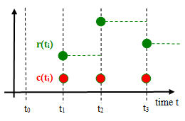
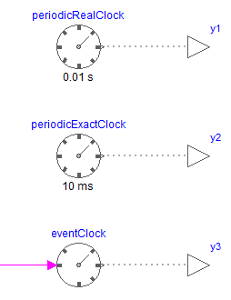
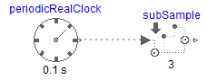
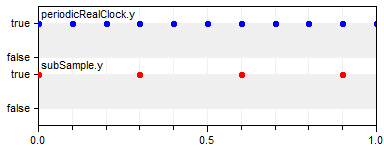

Modelica_Synchronous.UsersGuide
Modelica_Synchronous.UsersGuide
Modelica_Synchronous.UsersGuide
Modelica_Synchronous.UsersGuide
Library Modelica_Synchronous is a Modelica package to precisely define and synchronize sampled data systems with different sampling rates. This package contains the user's guide for the library and has the following content:
Extends from Modelica.Icons.Information (Icon for general information packages).
| Name | Description |
|---|---|
| Getting started | |
| Clocks | |
| Literature | |
| Release notes | |
| Modelica License 2 | |
| Requirements | |
| Contact |
Modelica_Synchronous.UsersGuide.ClocksA central element of the Modelica_Synchronous library is a clock. Below, the most important information for clocks is summarized. For more details, see the Modelica Language Specification, Chapter 16 (for Modelica Language Version ≥ 3.3).
A Clock type is a base data type (introduced in Modelica 3.3, additionally to Real, Integer, Boolean, String) that defines when a particular partition consisting of a set of equations is active. Starting with Modelica Language Version 3.3, every variable and every equation is either continuous-time or is associated exactly to one clock. This feature is visualized in the figure below where c(ti) is a clock that is active at particular time instants ti and r(ti) is a variable that is associated to this clock. A clocked variable has only a value when the corresponding clock is active:

Similarly to RealInput, RealOutput etc., clock input and output connectors, called ClockInput and ClockOutput, are defined in sublibrary ClockSignal.Interfaces in order to propagate clocks via connections. A clock signal can be generated with one of the blocks of sublibrary ClockSignals.Clocks:

The output signals of the blocks in the above figure are clock signals, by default visualized with dotted grey lines.
With the blocks of sublibrary ClockSignals.Sampler a clock signal can be sub-sampled, super-sampled, or shift-sampled to generate a new clock signal. For example, with the following model, a periodic clock signal of 0.1 s is sub-sampled with a factor 3 and therefore a clock signal with a period of 0.3 s is generated:


As usual in synchronous languages, a clock is represented by a true value when the clock is active. The relationship between such derived clocks is exact, so it is guaranteed that at every 3rd tick of clock "periodicRealClock.y", the clock "subSample.y" is active.
If a clock is associated to a clocked continuous-time partition, then an integrator has to be defined that is used to integrate the partition from the previous to the current clock tick. This is performed by setting parameter useSolver = true and defining the integration method as String with parameter solver. Both parameters are in tab Advanced of one of the clock signal generating blocks. The possible integration methods are tool dependent. It is expected that at least the solvers "External" (= use the integrator selected in the simulation environment) and "ExplicitEuler" (= explicit Euler method) are supported by every tool. For an example, see Examples.Systems.ControlledMixingUnit.
A clocked partition is a set of equations that depend on each other and where the boundary variables are marked with sample and hold operators. If a clocked partition contains no operator der, delay, spatialDistribution, no event related operators (with exception of noEvent(..)), and no when-clause with a Boolean condition, it is a clocked discrete-time partition, that is, it is a standard sampled data system that is described by difference equations. If a clocked partition is not a clocked discrete-time partition and it contains neither operator previous nor operator interval, it is a clocked discretized continuous-time partition. Such a partition has to be solved with a solver method. It is an error, if none of the two properties hold, e.g., if operators previous and der are both used in the same partition. In a clocked discrete-time partition all event generating mechanisms do no longer apply. Especially neither relations, nor one of the built-in event triggering operators will trigger an event.
Extends from Modelica.Icons.Information (Icon for general information packages).
Modelica_Synchronous.UsersGuide.LiteratureThis library is based on the following references:
The synchronous Modelica language elements allow for the first time to utilize a continuous-time, nonlinear, inverse model in a Modelica sampled-data system, by automatically discretizing this model and providing it as a clocked partition. This allows a convenient definition of certain nonlinear control systems, see example Examples.Systems.ControlledMixingUnit. Several practical details to use nonlinear inverse plant models in a control system are discussed in the following reference:
The synchronous Modelica language elements used in this library are based on the clock calculus and inference system proposed by (Colaco and Pouzet 2003) and implemented in Lucid Synchrone version 2 and 3 (Pouzet 2006). However, the Modelica approach also uses multi-rate periodic clocks based on rational arithmetic introduced by (Forget et. al. 2008), as an extension of the Lucid Synchrone semantics. These approaches belong to the class of synchronous languages (Benveniste et. al. 2002):
Extends from Modelica.Icons.Information (Icon for general information packages).
Modelica_Synchronous.UsersGuide.ModelicaLicense2All files in this directory (Modelica_Synchronous) and in all subdirectories, especially all files that build package "Modelica_Synchronous" are licensed by DLR under the Modelica License 2.
Licensor:
German Aerospace Center (DLR)
Robotics and Mechatronics Center
Institute of System Dynamics and Control
Postfach 1116
D-82230 Wessling
Germany
email: Martin.Otter@dlr.de
Copyright notices of the files:
Copyright © 2012-2013, DLR Institute of System Dynamics and Control.
The Modelica License 2
Frequently Asked Questions
Preamble. The goal of this license is that Modelica related model libraries, software, images, documents, data files etc. can be used freely in the original or a modified form, in open source and in commercial environments (as long as the license conditions below are fulfilled, in particular sections 2c) and 2d). The Original Work is provided free of charge and the use is completely at your own risk. Developers of free Modelica packages are encouraged to utilize this license for their work.
The Modelica License applies to any Original Work that contains the following licensing notice adjacent to the copyright notice(s) for this Original Work:
Licensed by the Modelica Association under the Modelica License 2
1. Definitions.
package <Name> ... end <Name>;” Modelica language element.2. Grant of Copyright License. Licensor grants You a worldwide, royalty-free, non-exclusive, sublicensable license, for the duration of the copyright, to do the following:
To reproduce the Original Work in copies, either alone or as part of a collection.
To create Derivative Works according to Section 1d) of this License.
To distribute or communicate to the public copies of the Original
Work or a Derivative Work under this License. No
fee, neither as a copyright-license fee, nor as a selling fee for
the copy as such may be charged under this License. Furthermore, a
verbatim copy of this License must be included in any copy of the
Original Work or a Derivative Work under this License.
For the matter of clarity, it is permitted A) to distribute or
communicate such copies as part of a (possible commercial)
collection where other parts are provided under different licenses
and a license fee is charged for the other parts only and B) to
charge for mere printing and shipping costs.
To distribute or communicate to the public copies of a Derivative
Work, alternatively to Section 2c), under any other license
of your choice, especially also under a license for
commercial/proprietary software, as long as You comply with Sections
3, 4 and 8 below.
For the matter of clarity, no
restrictions regarding fees, either as to a copyright-license fee or
as to a selling fee for the copy as such apply.
To perform the Original Work publicly.
To display the Original Work publicly.
3. Acceptance. Any use of the Original Work or a Derivative Work, or any action according to either Section 2a) to 2f) above constitutes Your acceptance of this License.
4. Designation of Derivative Works and of Modified Works. The identifying designation of Derivative Work and of Modified Work must be different to the corresponding identifying designation of the Original Work. This means especially that the (root-level) name of a Modelica package under this license must be changed if the package is modified (besides fixing of errors, adding vendor specific Modelica annotations, using a subset of the classes of a Modelica package, or using another representation, e.g. a binary representation).
5. Grant of Patent License. Licensor grants You a worldwide, royalty-free, non-exclusive, sublicensable license, under patent claims owned by the Licensor or licensed to the Licensor by the owners of the Original Work that are embodied in the Original Work as furnished by the Licensor, for the duration of the patents, to make, use, sell, offer for sale, have made, and import the Original Work and Derivative Works under the conditions as given in Section 2. For the matter of clarity, the license regarding Derivative Works covers patent claims to the extent as they are embodied in the Original Work only.
6. Provision of Source Code. Licensor agrees to provide
You with a copy of the Source Code of the Original Work but reserves
the right to decide freely on the manner of how the Original Work is
provided.
For the matter of clarity, Licensor might provide only a binary
representation of the Original Work. In that case, You may (a) either
reproduce the Source Code from the binary representation if this is
possible (e.g., by performing a copy of an encrypted Modelica
package, if encryption allows the copy operation) or (b) request the
Source Code from the Licensor who will provide it to You.
7. Exclusions from License Grant. Neither the names of
Licensor, nor the names of any contributors to the Original Work, nor
any of their trademarks or service marks, may be used to endorse or
promote products derived from this Original Work without express
prior permission of the Licensor. Except as otherwise expressly
stated in this License and in particular in Sections 2 and 5, nothing
in this License grants any license to Licensor’s trademarks,
copyrights, patents, trade secrets or any other intellectual
property, and no patent license is granted to make, use, sell, offer
for sale, have made, or import embodiments of any patent claims.
No license is granted to the trademarks of
Licensor even if such trademarks are included in the Original Work,
except as expressly stated in this License. Nothing in this License
shall be interpreted to prohibit Licensor from licensing under terms
different from this License any Original Work that Licensor otherwise
would have a right to license.
8. Attribution Rights. You must retain in the Source
Code of the Original Work and of any Derivative Works that You
create, all author, copyright, patent, or trademark notices, as well
as any descriptive text identified therein as an "Attribution
Notice". The same applies to the licensing notice of this
License in the Original Work. For the matter of clarity, “author
notice” means the notice that identifies the original
author(s).
You must cause the Source Code for any Derivative
Works that You create to carry a prominent Attribution Notice
reasonably calculated to inform recipients that You have modified the
Original Work.
In case the Original Work or Derivative Work is not provided in
Source Code, the Attribution Notices shall be appropriately
displayed, e.g., in the documentation of the Derivative Work.
9. Disclaimer
of Warranty.
The Original Work is provided under this
License on an "as is" basis and without warranty, either
express or implied, including, without limitation, the warranties of
non-infringement, merchantability or fitness for a particular
purpose. The entire risk as to the quality of the Original Work is
with You. This disclaimer of warranty constitutes an
essential part of this License. No license to the Original Work is
granted by this License except under this disclaimer.
10. Limitation of Liability. Under no circumstances and under no legal theory, whether in tort (including negligence), contract, or otherwise, shall the Licensor, the owner or a licensee of the Original Work be liable to anyone for any direct, indirect, general, special, incidental, or consequential damages of any character arising as a result of this License or the use of the Original Work including, without limitation, damages for loss of goodwill, work stoppage, computer failure or malfunction, or any and all other commercial damages or losses. This limitation of liability shall not apply to the extent applicable law prohibits such limitation.
11. Termination. This License conditions your rights to undertake the activities listed in Section 2 and 5, including your right to create Derivative Works based upon the Original Work, and doing so without observing these terms and conditions is prohibited by copyright law and international treaty. Nothing in this License is intended to affect copyright exceptions and limitations. This License shall terminate immediately and You may no longer exercise any of the rights granted to You by this License upon your failure to observe the conditions of this license.
12. Termination for Patent Action. This License shall terminate automatically and You may no longer exercise any of the rights granted to You by this License as of the date You commence an action, including a cross-claim or counterclaim, against Licensor, any owners of the Original Work or any licensee alleging that the Original Work infringes a patent. This termination provision shall not apply for an action alleging patent infringement through combinations of the Original Work under combination with other software or hardware.
13. Jurisdiction. Any action or suit relating to this License may be brought only in the courts of a jurisdiction wherein the Licensor resides and under the laws of that jurisdiction excluding its conflict-of-law provisions. The application of the United Nations Convention on Contracts for the International Sale of Goods is expressly excluded. Any use of the Original Work outside the scope of this License or after its termination shall be subject to the requirements and penalties of copyright or patent law in the appropriate jurisdiction. This section shall survive the termination of this License.
14. Attorneys’ Fees. In any action to enforce the terms of this License or seeking damages relating thereto, the prevailing party shall be entitled to recover its costs and expenses, including, without limitation, reasonable attorneys' fees and costs incurred in connection with such action, including any appeal of such action. This section shall survive the termination of this License.
15. Miscellaneous.
This section contains questions/answer to users and/or distributors of Modelica packages and/or documents under Modelica License 2. Note, the answers to the questions below are not a legal interpretation of the Modelica License 2. In case of a conflict, the language of the license shall prevail.
What are the main differences to the previous version of the Modelica License?
Modelica License 1 is unclear whether the licensed Modelica package can be distributed under a different license. Version 2 explicitly allows that “Derivative Work” can be distributed under any license of Your choice, see examples in Section 1d) as to what qualifies as Derivative Work (so, version 2 is clearer).
If You modify a Modelica package under Modelica License 2 (besides fixing of errors, adding vendor specific Modelica annotations, using a subset of the classes of a Modelica package, or using another representation, e.g., a binary representation), you must rename the root-level name of the package for your distribution. In version 1 you could keep the name (so, version 2 is more restrictive). The reason of this restriction is to reduce the risk that Modelica packages are available that have identical names, but different functionality.
Modelica License 1 states that “It is not allowed to charge a fee for the original version or a modified version of the software, besides a reasonable fee for distribution and support”. Version 2 has a similar intention for all Original Work under Modelica License 2 (to remain free of charge and open source) but states this more clearly as “No fee, neither as a copyright-license fee, nor as a selling fee for the copy as such may be charged”. Contrary to version 1, Modelica License 2 has no restrictions on fees for Derivative Work that is provided under a different license (so, version 2 is clearer and has fewer restrictions).
Modelica License 2 introduces several useful provisions for the licensee (articles 5, 6, 12), and for the licensor (articles 7, 12, 13, 14) that have no counter part in version 1.
Modelica License 2 can be applied to all type of work, including documents, images and data files, contrary to version 1 that was dedicated for software only (so, version 2 is more general).
Can I distribute a Modelica package (under Modelica License 2) as part of my commercial Modelica modeling and simulation environment?
Yes, according to Section 2c). However, you are not allowed to charge a fee for this part of your environment. Of course, you can charge for your part of the environment.
Can I distribute a Modelica package (under Modelica License 2) under a different license?
No. The license of an unmodified Modelica package cannot be changed according to Sections 2c) and 2d). This means that you cannot sell copies of it, any distribution has to be free of charge.
Can I distribute a Modelica package (under Modelica License 2) under a different license when I first encrypt the package?
No. Merely encrypting a package does not qualify for Derivative Work and therefore the encrypted package has to stay under Modelica License 2.
Can I distribute a Modelica package (under Modelica License 2) under a different license when I first add classes to the package?
No. The package itself remains unmodified, i.e., it is Original Work, and therefore the license for this part must remain under Modelica License 2. The newly added classes can be, however, under a different license.
Can I copy a class out of a Modelica package (under Modelica License 2) and include it unmodified in a Modelica package under a commercial/proprietary license?
No,
according to article 2c). However, you can include model, block,
function, package, record and connector classes in your Modelica
package under Modelica License 2. This means that your
Modelica package could be under a commercial/proprietary license, but
one or more classes of it are under Modelica License 2.
Note, a
“type” class (e.g., type Angle = Real(unit=”rad”))
can be copied and included unmodified under a commercial/proprietary
license (for details, see the next question).
Can I copy a type class or part of a model, block, function, record, connector class, out of a Modelica package (under Modelica License 2) and include it modified or unmodified in a Modelica package under a commercial/proprietary license
Yes, according to article 2d), since this will in the end usually qualify as Derivative Work. The reasoning is the following: A type class or part of another class (e.g., an equation, a declaration, part of a class description) cannot be utilized “by its own”. In order to make this “usable”, you have to add additional code in order that the class can be utilized. This is therefore usually Derivative Work and Derivative Work can be provided under a different license. Note, this only holds, if the additional code introduced is sufficient to qualify for Derivative Work. Merely, just copying a class and changing, say, one character in the documentation of this class would be no Derivative Work and therefore the copied code would have to stay under Modelica License 2.
Can I copy a class out of a Modelica package (under Modelica License 2) and include it in modified form in a commercial/proprietary Modelica package?
Yes. If the modification can be seen as a “Derivative Work”, you can place it under your commercial/proprietary license. If the modification does not qualify as “Derivative Work” (e.g., bug fixes, vendor specific annotations), it must remain under Modelica License 2. This means that your Modelica package could be under a commercial/proprietary license, but one or more parts of it are under Modelica License 2.
Can I distribute a “save total model” under my commercial/proprietary license, even if classes under Modelica License 2 are included?
Your classes of the “save total model” can be distributed under your commercial/proprietary license, but the classes under Modelica License 2 must remain under Modelica License 2. This means you can distribute a “save total model”, but some parts might be under Modelica License 2.
Can I distribute a Modelica package (under Modelica License 2) in encrypted form?
Yes. Note, if the encryption does not allow “copying” of classes (in to unencrypted Modelica source code), you have to send the Modelica source code of this package to your customer, if he/she wishes it, according to article 6.
Can I distribute an executable under my commercial/proprietary license, if the model from which the executable is generated uses models from a Modelica package under Modelica License 2?
Yes, according to article 2d), since this is seen as Derivative Work. The reasoning is the following: An executable allows the simulation of a concrete model, whereas models from a Modelica package (without pre-processing, translation, tool run-time library) are not able to be simulated without tool support. By the processing of the tool and by its run-time libraries, significant new functionality is added (a model can be simulated whereas previously it could not be simulated) and functionality available in the package is removed (e.g., to build up a new model by dragging components of the package is no longer possible with the executable).
Is my modification to a Modelica package (under Modelica License 2) a Derivative Work?
It is not possible to give a general answer to it. To be regarded as "an original work of authorship", a derivative work must be different enough from the original or must contain a substantial amount of new material. Making minor changes or additions of little substance to a preexisting work will not qualify the work as a new version for such purposes.
This section is devoted especially for the following applications:
A Modelica tool extracts information out of a Modelica package and presents the result in form of a “manual” for this package in, e.g., html, doc, or pdf format.
The Modelica language specification is a document defining the Modelica language. It will be licensed under Modelica License 2.
Someone writes a book about the Modelica language and/or Modelica packages and uses information which is available in the Modelica language specification and/or the corresponding Modelica package.
Can I sell a manual that was basically derived by extracting information automatically from a Modelica package under Modelica License 2 (e.g., a “reference guide” of the Modelica Standard Library):
Yes. Extracting information from a Modelica package, and providing it in a human readable, suitable format, like html, doc or pdf format, where the content is significantly modified (e.g. tables with interface information are constructed from the declarations of the public variables) qualifies as Derivative Work and there are no restrictions to charge a fee for Derivative Work under alternative 2d).
Can I copy a text passage out of a Modelica document (under Modelica License 2) and use it unmodified in my document (e.g. the Modelica syntax description in the Modelica Specification)?
Yes. In case you distribute your document, the copied parts are still under Modelica License 2 and you are not allowed to charge a license fee for this part. You can, of course, charge a fee for the rest of your document.
Can I copy a text passage out of a Modelica document (under Modelica License 2) and use it in modified form in my document?
Yes, the creation of Derivative Works is allowed. In case the content is significantly modified this qualifies as Derivative Work and there are no restrictions to charge a fee for Derivative Work under alternative 2d).
Can I sell a printed version of a Modelica document (under Modelica License 2), e.g., the Modelica Language Specification?
No, if you are not the copyright-holder, since article 2c) does not allow a selling fee for a (in this case physical) copy. However, mere printing and shipping costs may be recovered.
Extends from Modelica.Icons.Information (Icon for general information packages).
Modelica_Synchronous.UsersGuide.RequirementsThis library is basically a graphical user interface to conveniently operate with the Modelica 3.3 language elements of Chapter 16 "Synchronous Language Elements" of the Modelica Language Specification 3.3. Every tool that supports these language elements, as well as basic language elements of Modelica 3.1, should be able to support this library.
Extends from Modelica.Icons.Information (Icon for general information packages).
Modelica_Synchronous.UsersGuide.ContactAcknowledgements:
Extends from Modelica.Icons.Information (Icon for general information packages).
Automatically generated Thu Nov 28 13:08:01 2013.